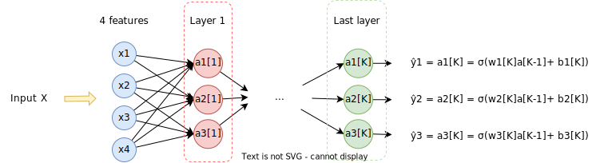

- Input: Given any input \(X\) the first thing we do is flatten it. For example if \(X\) is a rgb image of \(64 \times 64\), then \(X \in \mathbb{R}^{64 \times 64 \times 3}\) (for each of the \(64 \times 64\) pixels we have three color channels: red, green, blue), is flattened into a vector in \(\mathbb{R}^{(64*64*3) \times 1}\)
-
Neuron: is an operation that has two parts:
- Linear part: we denote the linear part like \(z^{[i]}\), where \(i\) is the current layer.

- Activation part

- Layer: a layer is a compound of neurons that are not connected with each other.

The principal steps of the algorithm are:
- Initialize the weights \(w\) and biases \(b\) randomly
- Find the optimal \(w, b\)
- Use the optimized \(w, b\) to predict the output by using the formula \(\hat{y} = \sigma(wx +b)\)
The output layer will be different depending on the problem we are tackling. For example if we want to discriminate between 3 classes then the output layer could be as follows:

So now the output is a vector \(\hat{y} \in \mathbb{R}^{c \times 1}\) where \(c\) is the number of classes.
The previous classifier allows for outputting multiples classes in the result, that is we can obtain a predicted output of the form \(\hat{y} = \begin{bmatrix} 1 \\1 \\ 0 \end{bmatrix}\). What if we want to add a constraint such that only one class can be predicted. Then we use the softmax function as the activation function on the output layer:
Thus, instead of a probability for each class what we obtain is a probability distribution for all the classes.